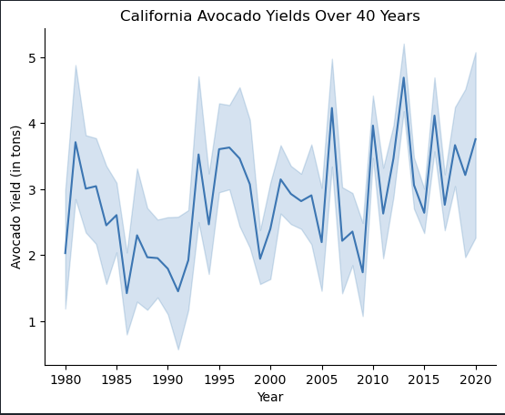
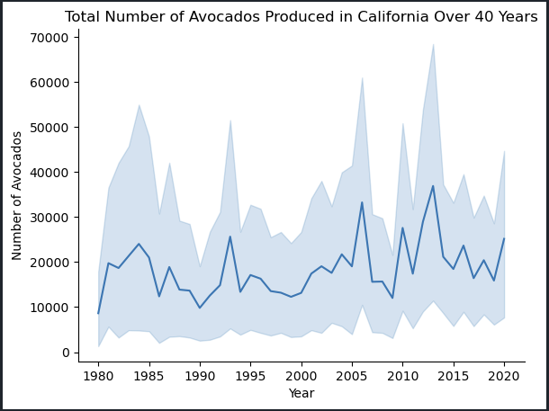

Avocado Growth in California Over 40 Years
Avocado growth in California is not something that California is necessarily known for. However, all avocados need is a hot climate to grow.
The graph above shows a general upward trend in Avocado yields over 40 years. These are measured in tons.
With this graph, we only see a slight upward trend (and even some stagnance) in avocado production across all California counties.
What does this mean with our data? It may mean that our avocados are getting denser. There's more avocado per avocado
Though the trend of avocado production seems stagnant, you can still see the relevance between the two features. Spikes and dips correlate between the two plots.